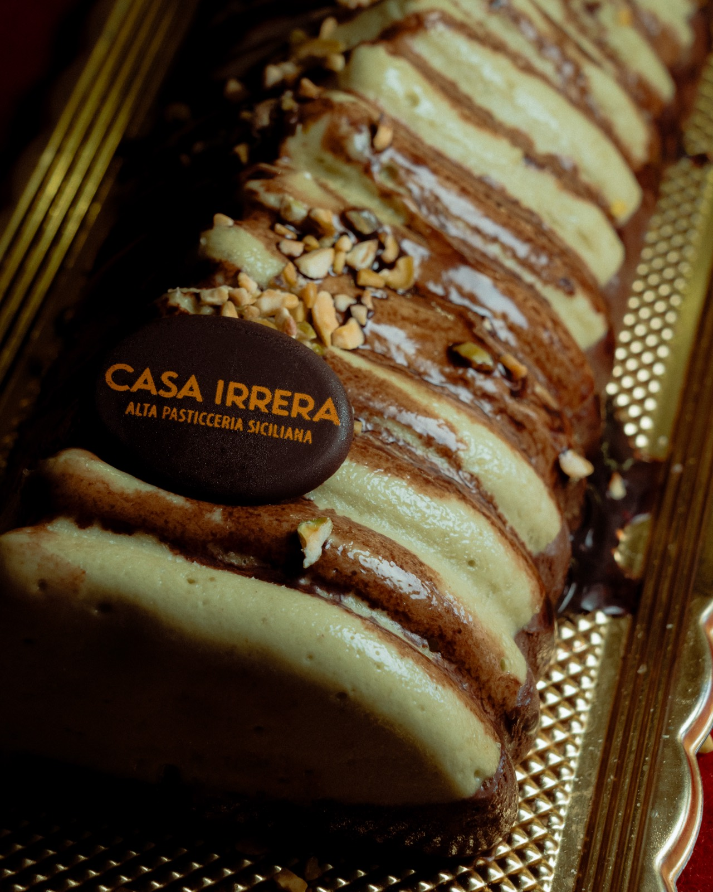
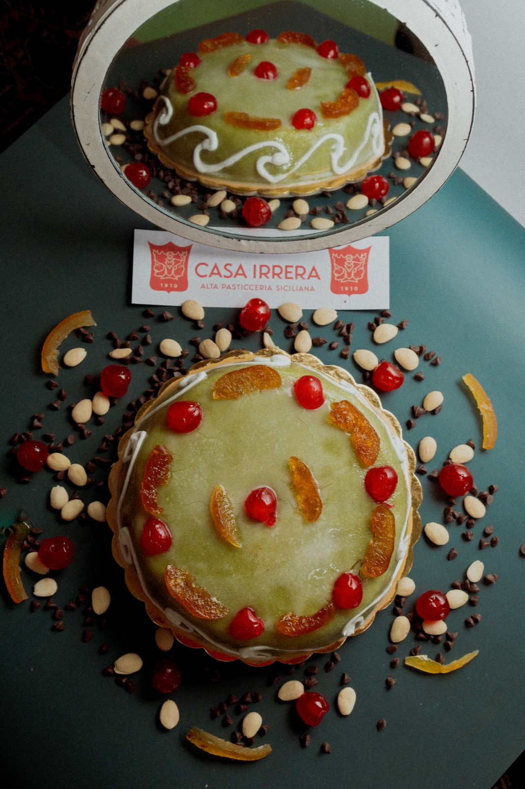
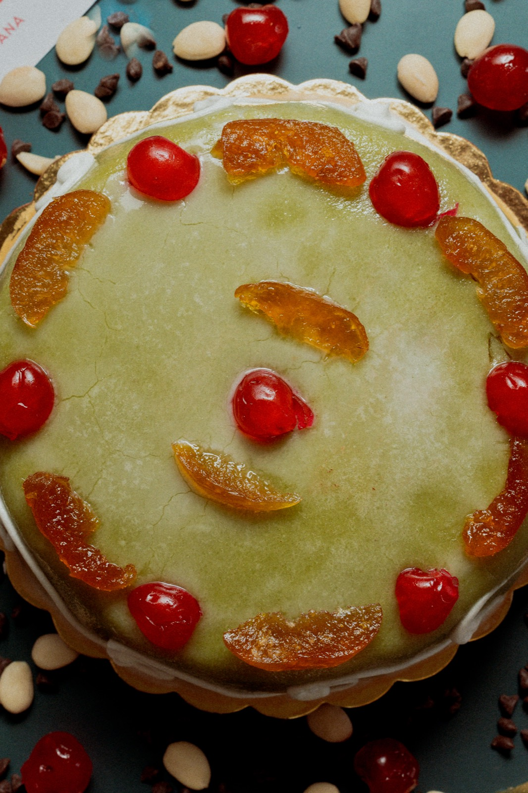
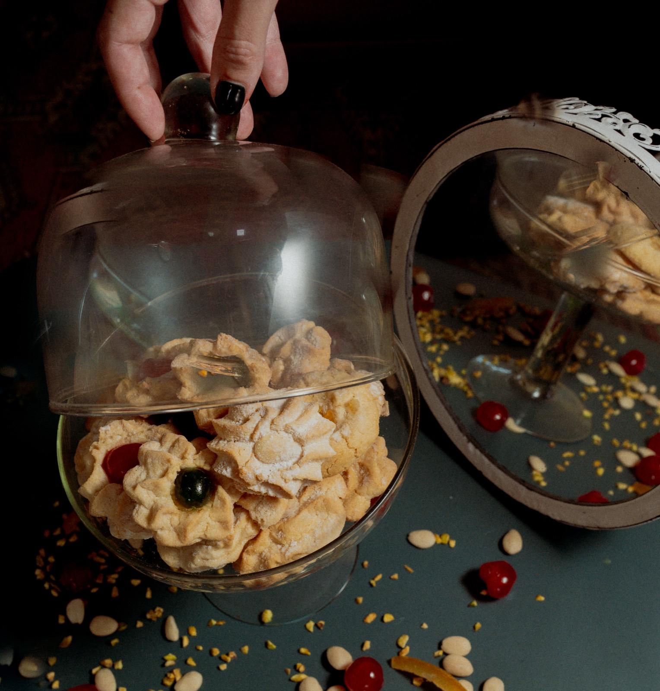
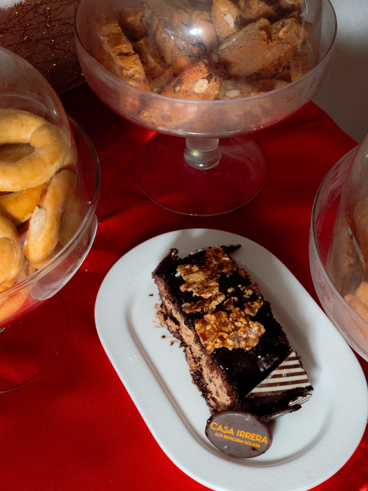
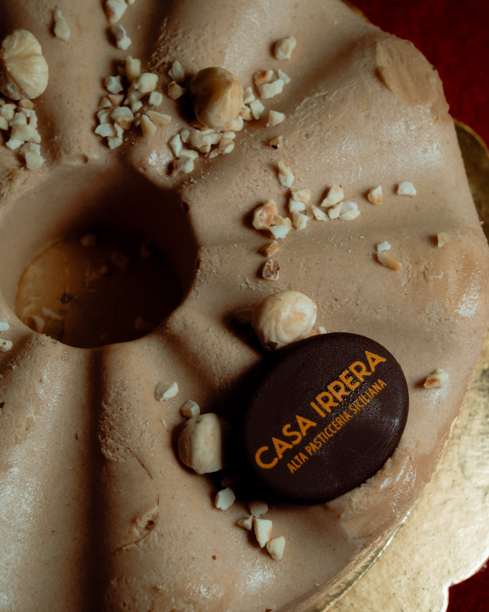

Cliente · Food
Copertura completa di pasticceria per Casa Irrera — torte, dolci e dettaglio di prodotto girato a Messina.
← Torna a FotografiaUna relazione a breve termine costruita intorno a uno shooting editoriale per un servizio di rivista — fotografia di prodotto e dolci finiti per Casa Irrera, una rinomata pasticceria d'alta gamma siciliana. Circa due ore e mezza sul posto, con una Sony A7 IV, flash rimbalzato invece che diretto: abbastanza controllo per mantenere texture e colore coerenti su una dozzina di dolci diversi senza appiattirne nessuno sotto una luce troppo dura.
La prima vera decisione in uno shooting come questo non è l'angolazione — è lo sfondo. Ogni piatto viene valutato per capire quale colore e superficie faranno leggere chiaramente la sua texture e la sua palette prima ancora di scattare un solo fotogramma, perché uno sfondo che funziona per una pasta pallida alle mandorle di solito uccide una al cioccolato fondente. L'obiettivo, per tutto lo shooting, era comunicare qualità, dettaglio e identità del prodotto — il tipo di immagine che una rivista può pubblicare a grandezza piena e la superficie regge ancora.






Per luoghi la cui architettura, atmosfera e identità meritano di essere viste insieme.
Inizia un progetto